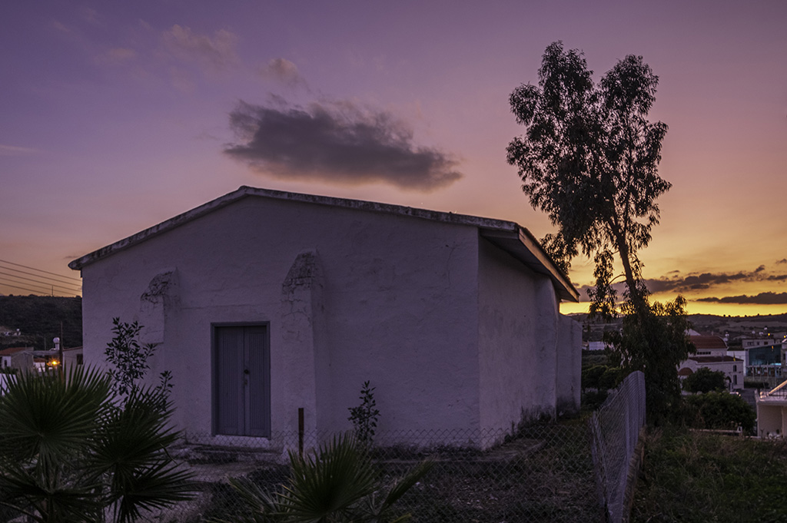
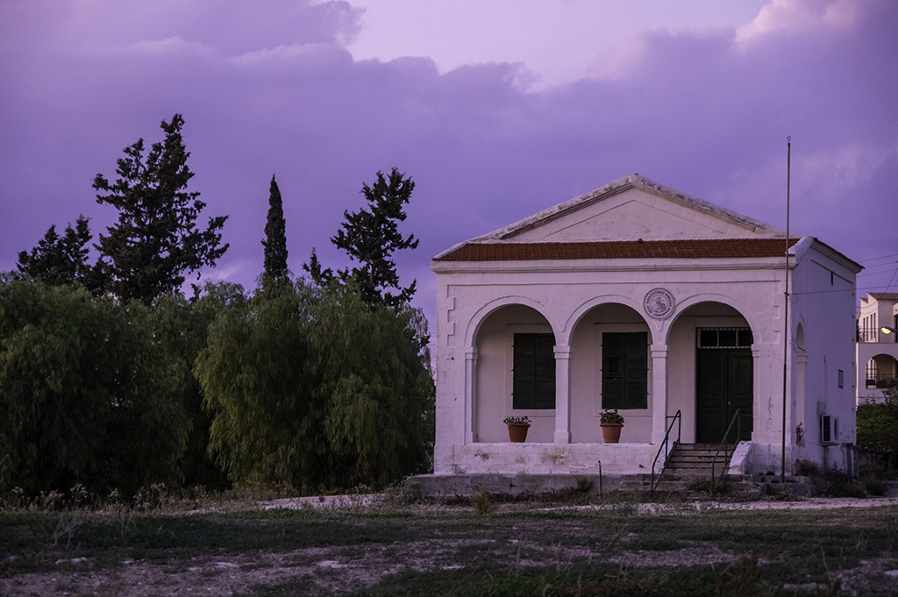

Alaminos was originally a mixed village, occupied by both Greek- and Turkish-Cypriots. As one can observe when looking around, most of the houses and public buildings in the Turkish-Cypriot quarter on the east side of the Xeros are still standing. On the other side of the river to the west, you can see the Greek-Cypriot quarter, with the Byzantine church of Agios Mamas to the southwest. Some displaced Greek-Cypriot families live in the Turkish-Cypriot quarter today.
Η Αλαμινός υπήρξε αρχικά μικτό χωριό Ελληνοκύπριων και Τουρκοκύπριων κατοίκων. Όπως μπορεί να παρατηρήσει κανείς γύρω του, οι περισσότερες οικίες και τα δημόσια κτήρια της τουρκοκυπριακής συνοικίας ανατολικά του Ξερού ποταμού σώζονται μέχρι σήμερα σε σχετικά καλή κατάσταση. Στην απέναντι όχθη του ποταμού στα δυτικά, μπορείτε να δείτε την ελληνοκυπριακή συνοικία, με τη Βυζαντινή εκκλησία του Αγίου Μάμα στα νοτιοδυτικά. Ένας μικρός αριθμός ελληνοκύπριων προσφύγων ζουν σήμερα στην τουρκοκυπριακή συνοικία.
Alaminos eskiden hem Kıbrıslı Rumlar hem de Kıbrıslı Türkler’in ikamet ettiği karma bir köydü. Etrafa baktığınızda da görebileceğiniz gibi, Kseros'un doğu tarafında bulunan Kıbrıs Türk mahallesindeki evlerin ve kamu binalarının çoğu hala ayaktadır. Nehrin batıdaki diğer tarafında, güneybatıda Bizans kilisesi Ayios Mamas kilisesinin bulunduğu Kıbrıs Rum mahallesini görebilirsiniz. Yerinden edilmiş bazı Kıbrıslı Rum aileler bugün Kıbrıs Türk mahallesinde yaşıyor.
On the main crossroad of the Turkish-Cypriot quarter, you can see the mosque of Alaminos, standing on a flat platform. The mosque has a northwest to southeast alignment, a rectangular ground plan, a pitched roof, a half-buttress on either side of the entrance, but no minaret. It was constructed very early in the 20th century, probably replacing an earlier mosque on the same site. Repair works to the building were carried out in 1908 and 1913, paid for by the EVKAF administration (Kıbrıs Vakıflar İdaresi / Cyprus Pious Foundations Board). You can also see a fountain in the courtyard to the southeast, built during the British colonial period. The mosque ceased to function in 1974.
Στην κεντρική διασταύρωση της τουρκοκυπριακής συνοικίας, βλέπετε το τζαμί της Αλαμινού, το οποίο είναι κτισμένο σε επίπεδη υπερυψωμένη πλατφόρμα δίπλα στο δρόμο. Το τζαμί, με προσανατολισμό βορειοδυτικά-νοτιοανατολικά, έχει ορθογώνια κάτοψη, κεκλιμένη οροφή και αντηρίδες εκατέρωθεν της εισόδου αλλά δεν έχει μιναρέ. Κατασκευάστηκε στα πρώτα χρόνια του 20ου αιώνα, αντικαθιστώντας πιθανώς παλαιότερο τζαμί στην ίδια θέση. Εργασίες επισκευής στο κτίριο πραγματοποιήθηκαν το 1908 και το 1913 με δαπάνη του ΕΒΚΑΦ (Kıbrıs Vakıflar İdaresi / Θρησκευτικό Ίδρυμα Τουρκοκυπρίων). Στον προαύλιο χώρο στα νοτιοανατολικά μπορείτε επίσης να δείτε κρήνη, η οποία κατασκευάστηκε την περίοδο της Αγγλοκρατίας. Το τζαμί έπαψε να λειτουργεί το 1974.
Kıbrıs Türk mahallesinin ana kavşağında, düz bir platformun üzerinde duran Alaminos camisini görebilirsiniz. Kuzeybatı-güneydoğu yönlü cami, dikdörtgen bir kat planına, eğimli bir çatıya ve girişin iki yanında payandalara sahiptir, ancak minaresi yoktur. 20. yüzyılın başlarında inşa edilmiş ve muhtemelen aynı yerde bulunan eski bir caminin yerini almıştır. Binanın onarım işleri 1908 ve 1913 yıllarında EVKAF yönetimince (Kıbrıs Vakıflar İdaresi) karşılanarak yapılmıştır. Güneydoğudaki avluda İngiliz sömürge döneminde inşa edilmiş bir çeşme de görebilirsiniz. Cami 1974'te faaliyete son verdi.
The white-plastered building with the arched façade that you see to the north, opposite the mosque, was constructed in the early 20th century and comprised the school of the Turkish-Cypriot community. It is a rectangular building with an arched portico, a pitched roof and beautiful quoins with carefully cut stones. The building is now used by the Alaminos Cultural Association for its various activities.
Το λευκό, επιχρισμένο κτίριο με την τοξωτή πρόσοψη που βλέπετε στα βόρεια, απέναντι από το τζαμί, κατασκευάστηκε στις αρχές του 20ου αιώνα και λειτούργησε ως σχολείο της τουρκοκυπριακής κοινότητας. Πρόκειται για ορθογώνιο κτίσμα με τοξωτή στοά στην πρόσοψη, δίρριχτη στέγη και προσεγμένες γωνίες με ορθογώνια αγκωνάρια. Το κτίριο φιλοξενεί σήμερα δραστηριότητες του Πολιτιστικού Ομίλου Αλαμινού.
Kuzeyde, caminin karşısında gördüğünüz kemerli cepheye sahip beyaz sıvalı bina, 20. yüzyılın başlarında inşa edilmiş ve Kıbrıs Türk toplumunun okulunu teşkil etmiştir. Ön cephesinde kemerli revak, eğimli çatı ve dikdörtgen dirsekli açıları olan dikdörtgen bir yapıdır. Bina şu anda Alaminos Kültür Derneği tarafından çeşitli etkinlikler için kullanılıyor.
.